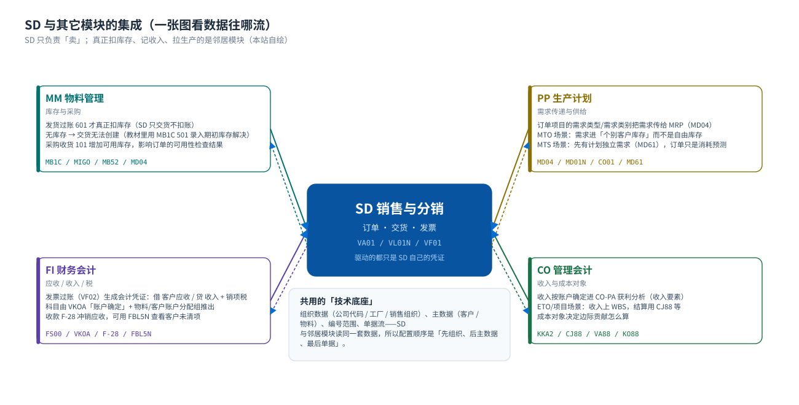
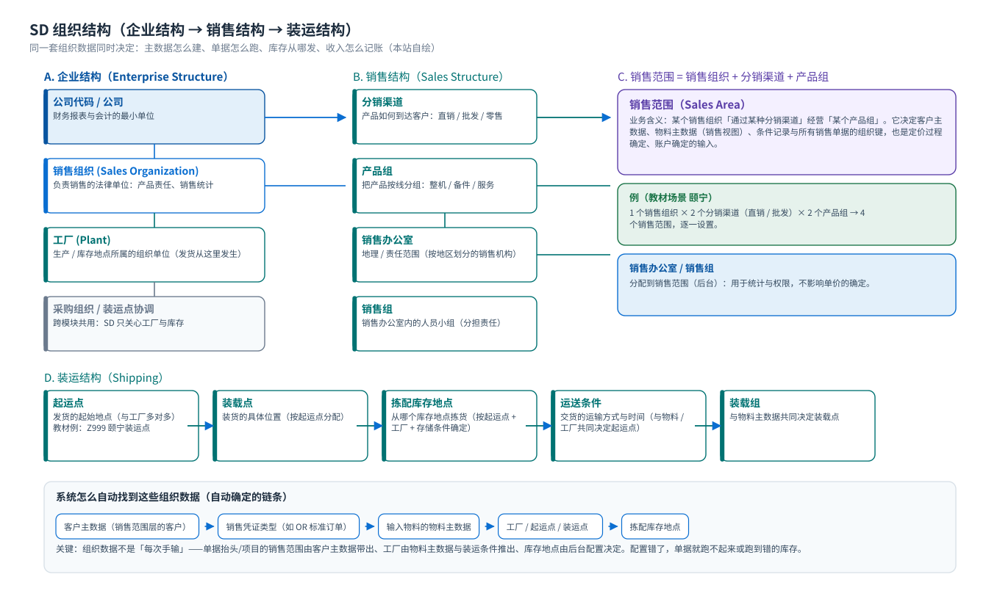
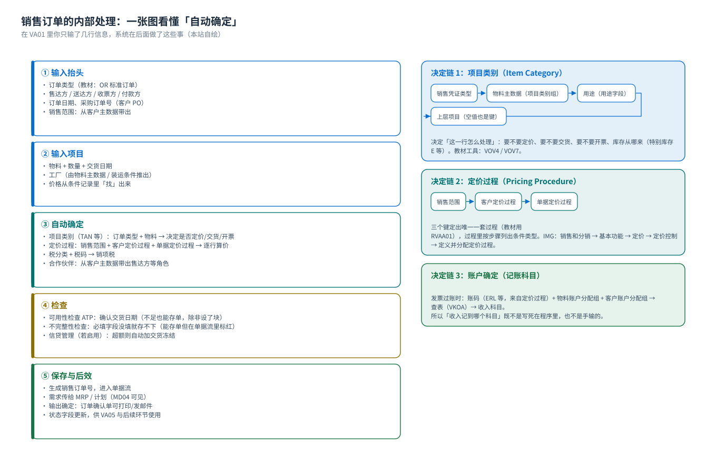

概念与定位：SD 到底在管什么
销售与分销 · 三大概念层 · 五大单据 · 集成边界 · 常见误解
0. 先看真实系统：我们的课程从这个界面开始
SAP 的所有业务操作都在这套客户端（SAP GUI）里完成：登录 → 进入「SAP 轻松访问」菜单树 → 在左上角命令框输入事务代码（T-code）→ 回车进入具体功能。下面三张是教材环境里的真实画面。


界面语言的两件事教材环境的业务画面是中文（本站截图都是这样），但登录器 SAP Logon 本身是英文（
Connections / Log On / System Entry Properties）。这不是问题——登录器是客户端工具，进入系统后的业务界面才跟随登录语言。| 界面要素 | 在哪 | 作用 |
|---|---|---|
| 命令框（左上角） | 菜单栏下方第一个框 | 输入 T-code 直接跳转，例如 VA01、VL01N、VF01 |
| 菜单树 | 左侧树形结构 | 按模块浏览功能（不用记代码时的入口） |
| 工具栏按钮 | 顶部一排图标 | 保存、返回（F3）、退出（Shift+F3）、新条目等 |
| 状态栏（底部） | 窗口最下方 | 显示系统消息、错误/警告、以及当前对象的状态（示例里的 trn03、OVR 就是状态标识） |
课堂上的第一个练习让学员登录后做三件事：① 用菜单树找到「销售和分销」；② 在命令框输入
VA03 回车；③ 记住 F1（看字段帮助）、F4（看取值列表）、F3（返回）这三个快捷键。整套课程都会用到它们。1. 一句话定位
SD（Sales and Distribution，销售与分销）负责把「客户想买东西」这件事，一路变成「钱回到公司账上」：问价 → 报价 → 接单 → 发货 → 开票 → 收款。它管的是销售凭证（谁买、买什么、多少钱、什么时候发、开多少票）；真正扣库存的是 MM，真正记收入的是 FI，真正排生产的是 PP。
先记住这句话
SD 回答五个问题，每个问题对应一类主数据或配置：
- 卖什么 → 物料主数据（销售视图）+ 项目类别
- 卖给谁 → 客户主数据 + 四个伙伴角色
- 多少钱 → 条件记录 + 定价过程（条件技术）
- 怎么发货 → 装运点 / 装载点 / 拣配库存地点 + 外向交货
- 怎么开票收钱 → 交付相关开票 + 账户确定（收入科目）+ 收款清账
2. 与邻居模块的分工
「SD 一张订单，牵动全公司」——这张图说明数据往哪流、哪一步是谁的责任。
{kind=link}

| 事件（SD 里做的动作） | SD 产生什么 | 邻居模块产生什么 | 关键点 |
|---|---|---|---|
保存销售订单 VA01 | 销售订单（VBAK / VBAP） | PP：需求传给 MRP（MD04 可见） | 订单保存不动库存 |
创建外向交货 VL01N | 交货单（LIPS） | MM：准备拣配（此时仍不扣账） | 交货只「计划」出库 |
发货过账（PGI）VL02N | 交货状态更新 | MM：移动类型 601 的物料凭证，库存减少 | 这一步才真正出库 |
创建发票 VF01 | 发票（VBRK / VBRP） | — | 参照交货开票 |
发票过账（下达）VF02 | 开票状态更新，提示「凭证已经传送到记账」 | FI：会计凭证（借客户应收 / 贷收入 + 销项税） | 科目由账户确定推出 |
收款 F-28 | — | FI：应收清账，流程闭环 | 可用 FBL5N 查看未清项 |
自系统确认订单是否真的把需求传给 MRP，取决于物料主数据的 MRP 类型与需求传递设置：在
VA03 打开一张订单 → 项目 → 「计划行」页签，看「需求类型 / 需求类别」是否有值；再去 MD04 输入同一物料，看有没有「销售订单」行。3. 三大概念层：组织 → 主数据 → 单据
SD 的所有东西都可以放进这三层。这也是配置顺序：先搭组织结构，再建主数据，最后才能跑单据。
| 层 | 回答什么 | 典型对象 | 没有它会发生什么 |
|---|---|---|---|
| ① 组织结构 | 公司在哪儿卖、卖什么、从哪儿发货 | 公司代码 / 销售组织 / 分销渠道 / 产品组 / 销售范围 / 工厂 / 起运点 | 单据做不出来：客户主数据与物料销售视图都要填销售范围，销售范围不存在就选不到 |
| ② 主数据 | 卖给谁、卖什么、多少钱 | 客户主数据、物料主数据（销售视图）、条件记录、客户-物料信息记录 | 能开单据但全是错的：没有客户 → 订单建不了；没有条件记录 → 价格为 0 或提示不完整 |
| ③ 单据 | 这一笔生意现在走到哪一步 | 询价 / 报价 / 销售订单 / 交货 / 发票（+ MM 物料凭证、FI 会计凭证） | 没有单据就没有业务；单据之间靠「参照」串成单据流，保证数量与价格一致 |
给学员的一句口诀组织定坐标，主数据定规则，单据定这笔生意。后面遇到任何 SD 问题，先判断它属于三层里的哪一层，再去对应的配置或主数据里找答案。
4. 五大单据与单据流

| 单据 | 作用 | 创建 T-code | 常规单据类型 | 下一步 |
|---|---|---|---|---|
| 询价 Inquiry | 客户询问，不构成约束 | VA11 | IN | 可转报价 |
| 报价 Quotation | 正式报价，可带有效期 | VA21 | QT | 可转销售订单 |
| 销售订单 Sales Order | 接单：定价、可用性检查、交货日期 | VA01 | OR | 创建交货 |
| 外向交货 Delivery | 确定发货内容、起运点、拣配 | VL01N | LF | 拣配 → 发货过账 |
| 发票 Billing Document | 结算：算收入与税，生成会计凭证 | VF01 | F2 | 过账到 FI → 收款 |
单据类型 ≠ 单据类别上面「OR / LF / F2」是单据类型（Document Type），是配置对象，决定这个单据怎么走（是否定价、是否检查可用性、编号范围等）。教材场景里订单用 OR、发票用 F2。不同系统的自定义单据类型很多，看到陌生代码时用 F4 看描述即可。
5. 销售范围：SD 的坐标
{kind=link}

销售范围 = 销售组织 + 分销渠道 + 产品组。教材场景里：1 个销售组织 × 2 个分销渠道（直销 / 批发）× 2 个产品组 → 共 4 个销售范围，逐个设置。它出现在：客户主数据的销售视图、物料主数据的销售视图、条件记录、所有销售单据的抬头。
{kind=link}

术语小提醒教材把「销售范围」通俗地称为「销售部门」；在后台里与「部门」相关的其实是销售办公室（Sales Office）和销售组（Sales Group）两个不同的对象。面试或考试时不要混用，看系统的字段名（Sales Area / Sales Office / Sales Group）最稳。
6. 一张订单背后的自动确定（总览）
SD 让新手困惑的地方，几乎都出在「系统怎么自动确定某样东西」。把这四条链记住，SD 就通了一半：
| 要确定什么 | 由什么决定（决定键） | 在哪配置 | 现象 |
|---|---|---|---|
| 项目类别 Item Category | 销售凭证类型 + 物料（项目类别组）+ 用途 + 上层项目 | IMG：VOV4（决定）/ VOV7（定义） | 决定这一行要不要定价、交货、开票 |
| 定价过程 Pricing Procedure | 销售范围 + 客户定价过程 + 单据定价过程 | IMG：销售和分销 → 基本功能 → 定价 → 定价控制 → 定义并分配定价过程 | 决定用哪套算价表 |
| 税码 Tax Code | 客户税分类 + 物料税分类 + 税率（国家） | IMG：销售和分销 → 基本功能 → 税收 | 决定销项税算多少 |
| 收入科目 Revenue Account | 账码（来自定价过程）+ 物料账户分配组 + 客户账户分配组 | IMG：销售和分销 → 基本功能 → 科目分配/成本 → 收入账户确定 | 决定发票过账记到哪个收入科目 |
为什么值得这样设计如果每次都手输价格和科目，出错率会很高。SAP 的思路是：把「怎么算」写成配置，把「算的依据」写成主数据，录单时系统自己查。所以 SD 顾问的工作，大半是在维护这两件事。
7. 十二个常见误解（课堂上最常被问到的）
| # | 误解 | 正确理解 |
|---|---|---|
| 1 | SD 管库存 | 不对。库存归 MM。SD 的交货只是「要求出库」，发货过账（601）才动库存。 |
| 2 | 销售组织就是公司代码 | 不是。一个销售组织只属于一个公司代码，但一个公司代码可以有多个销售组织（多对一）。 |
| 3 | 价格维护在物料主数据里 | 不是。价格在条件记录（VK11）里；物料销售视图只决定「能不能卖、税率分类、账户分配组」等。 |
| 4 | 交货就扣库存 | 不是。创建交货只准备拣配，发货过账（PGI，移动类型 601）才产生物料凭证。 |
| 5 | 没库存就不能存订单 | 可以存。可用性检查默认只给出确认日期，不阻止保存（是否阻止取决于配置与是否「设块」）。 |
| 6 | 可以直接开票，不用交货 | 不行（常规流程）。发票通常参照交货创建，交货没完成开票会提示没有可开票的交货。教材里的顺序就是交货 → 发票。 |
| 7 | 改了客户主数据，老订单会跟着变 | 不会自动变。单据里存的是当时的快照；改主数据只影响新建单据（或手改单据、重新定价）。 |
| 8 | 一个客户只有一个编号 | 可以有多个。售达方 / 送达方 / 收票方 / 付款方可以是不同客户编号，通过伙伴角色关联（教材把收货方分配给订货方就是这件事）。 |
| 9 | 客户主数据的销售视图所有销售范围共用一份 | 按销售范围分别维护。同一客户在不同销售范围可以有不同数据。 |
| 10 | 销售范围就是销售部门 | 教材里的通俗叫法。正式对象是销售范围（Sales Area，组织键组合）与销售办公室（Sales Office，机构）。 |
| 11 | 定价过程就是打折表 | 不止。定价过程把价格、折扣、运费、税等条件类型按步骤排出顺序，还带账码（决定记账科目）。 |
| 12 | 发票过账要手工做会计凭证 | 不用。发票下达（VF02）时系统自动生成会计凭证并提示「凭证已经传送到记账」，科目来自账户确定。 |
8. 本页小结与下一步
看完这一页你应该能回答
- SD 管的是哪五件事？各由哪类主数据/配置支撑？
- 为什么保存订单不等于出货，出货不等于记账？
- 销售范围由哪三个键组成，它决定了哪些数据？
- 项目类别、定价过程、收入科目分别由什么决定？